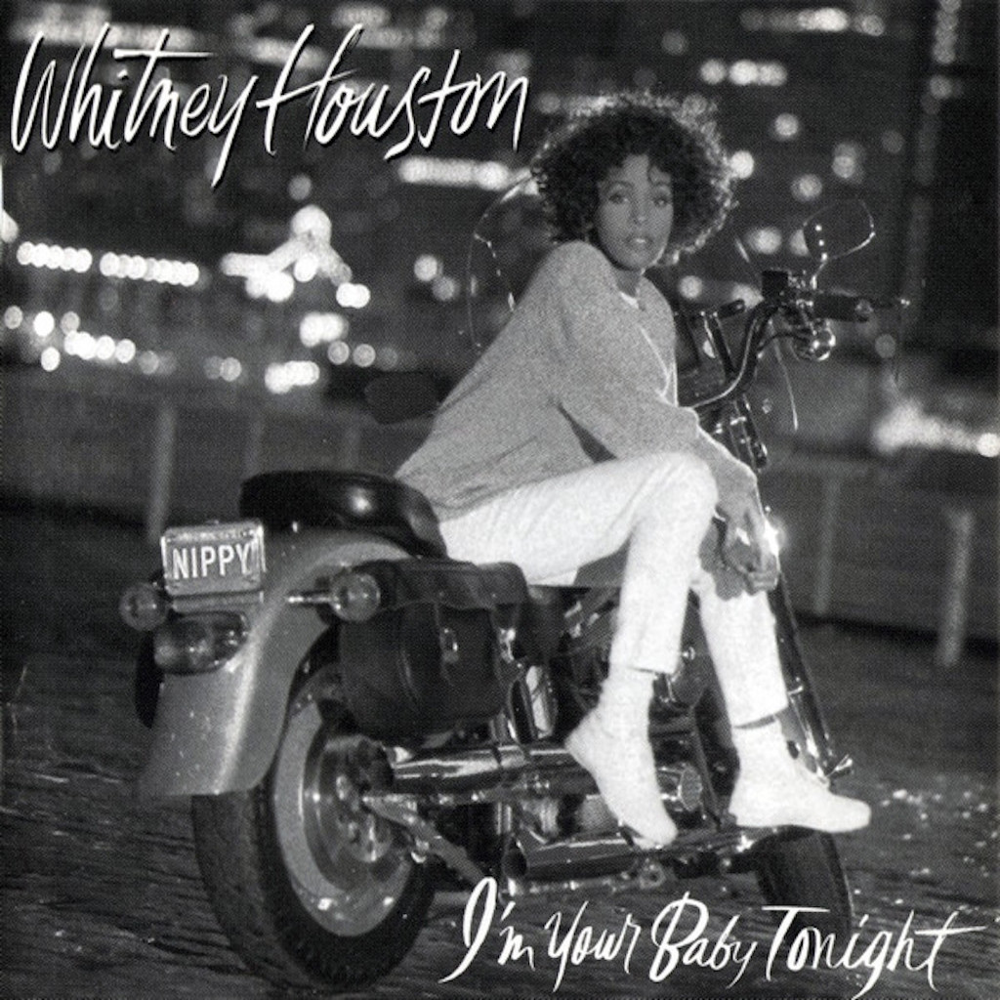
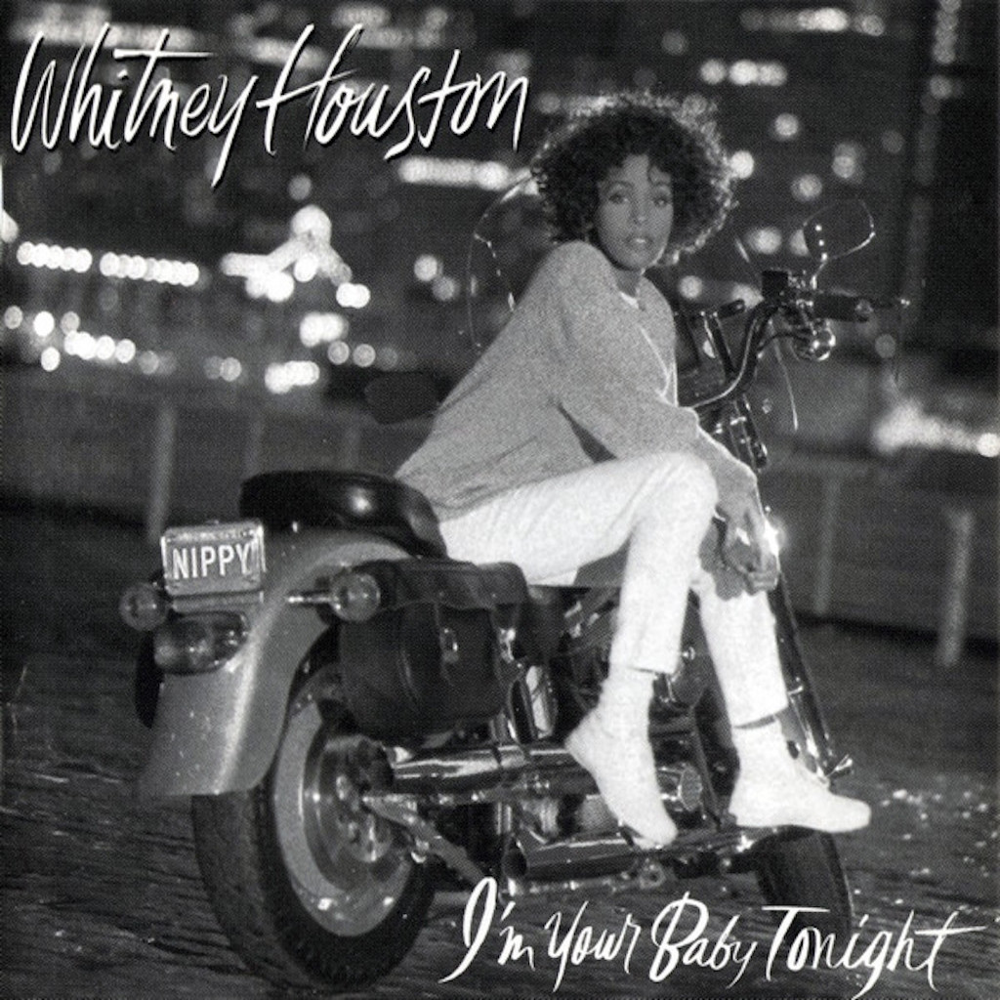

August 9, 1963 - February 11, 2012
Whitney Houston

Whitney "The Voice" Houston was born August 9th, 1963, in Newark New Jersey to gospel star, Cissy Houston and John Russel Houston Jr. Her career spanned 36 years, during which time she became one of the bestselling music artists of all time, with sales of over 200 million records worldwide. Signing her first recording deal at just 19, she would go on to release seven studio albums, three soundtracks, one live album, and six compilation albums. All of these albums amassed huge success and numerous awards.
Whitney Houston was a singer, actress, producer and model. Following her 1992 film debut in The Bodyguard, Houston went on to star in four more films, and produce several popular films, including Cinderella (1997), The Cheetah Girls and The Princess Diaries. She also produced the soundtrack for The Preacher`s Wife, the bestselling gospel album of all time. Her life and career were nothing short of incredible, to say the least. She passed away on February 11, 2012 and was laid to rest on February 18th in Westfield, New Jersey.

 
